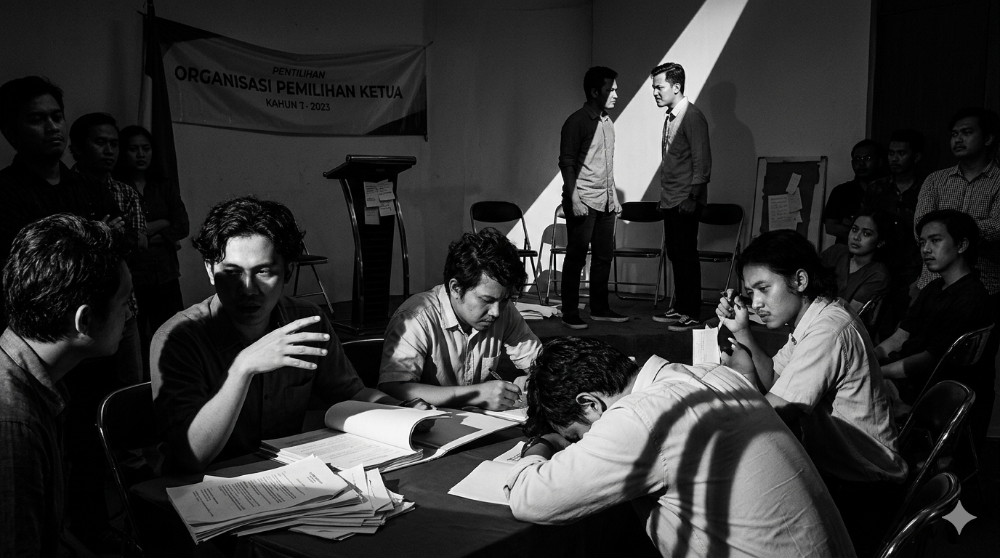

Tulisan ini tidak dimaksudkan untuk menghakimi atau menyudutkan organisasi mahasiswa tertentu. Penulis juga bukan orang yang paling paham, apalagi paling benar dalam membaca dinamika organisasi. Apa yang disampaikan di sini lebih merupakan kegelisahan sekaligus refleksi pribadi dari apa yang dilihat, dirasakan, dan dialami dalam perjalanan berorganisasi. Karena itu, tulisan ini tidak hadir sebagai vonis, melainkan sebagai ajakan untuk sama-sama melihat dari sudut pandang yang mungkin jarang disentuh.
Dalam kegelisahan itu, penulis mencoba menawarkan satu pendekatan: bahwa tasawuf—yang sering dianggap jauh dari dunia organisasi—sebenarnya memiliki peran penting sebagai fondasi batin. Bukan untuk mengubah organisasi menjadi sesuatu yang kaku atau terlalu formal secara religius, tapi justru untuk menghidupkan kembali ruh yang mungkin mulai memudar. Sebab pada akhirnya, organisasi bukan hanya soal gerak dan capaian, tapi juga tentang arah dan makna.
Organisasi mahasiswa sering dibayangkan sebagai ruang idealisme: tempat lahirnya gagasan besar, kader perubahan, dan semangat pengabdian. Tapi kalau kita cukup jujur melihat ke dalam, tidak sedikit organisasi yang sebenarnya hanya sibuk di permukaan. Kegiatannya banyak, tapi arahnya kabur. Bahkan kadang terasa seperti panggung yang ramai, tapi kosong makna. Kehilangan arah ini biasanya dimulai dari sesuatu yang tampak sepele: niat yang tidak lagi dijaga. Banyak yang masuk organisasi dengan semangat awal yang baik, tapi pelan-pelan bergeser. Jabatan mulai dilihat sebagai prestise, bukan amanah. Program kerja dijadikan portofolio, bukan ladang khidmat. Dan tanpa sadar, organisasi berubah menjadi tempat “menjual diri” dengan cara yang lebih halus.
Contoh paling nyata bisa dilihat saat momentum pemilihan ketua. Alih-alih menjadi ajang adu gagasan, yang muncul justru politik kecil-kecilan: lobi sana-sini, membangun citra, bahkan menjatuhkan lawan secara halus. Semua dibungkus dengan bahasa rapi: “demi kebaikan organisasi”. Padahal kalau ditarik ke dalam, seringkali itu hanya pertarungan ego yang mencari panggung. Di sinilah relevansi kritik Imam Al-Ghazali dalam Ihya’ Ulumuddin terasa sangat hidup. Beliau mengingatkan bahwa amal yang tercampur riya’ dan ambisi duniawi akan kehilangan nilainya. Kalau ditarik ke realitas organisasi, maka kerja keras yang tidak dilandasi keikhlasan hanya akan melahirkan kelelahan—bukan keberkahan. Kita lelah, tapi tidak tenang. Sibuk, tapi kosong.
Masalahnya, banyak hal yang salah justru dinormalisasi. Misalnya, budaya “yang penting kelihatan kerja”. Dokumentasi dibuat lebih serius daripada dampak programnya. Atau kebiasaan memoles laporan agar terlihat sukses, padahal di lapangan banyak yang tidak berjalan. Ini bukan lagi sekadar kekurangan teknis, tapi sudah menyentuh kejujuran batin. Imam Al-Qusyairi dalam Risalah Qusyairiyah menjelaskan bahwa inti perjalanan spiritual adalah kejujuran (shidq) dalam hati. Tanpa kejujuran, seseorang bisa menipu orang lain—dan lebih parahnya, menipu dirinya sendiri. Dalam organisasi, ini terlihat ketika seseorang merasa sudah berkontribusi besar, padahal yang dikejar sebenarnya hanya pengakuan. Dampaknya mulai terasa dalam dinamika internal. Rapat berubah jadi arena adu dominasi, bukan diskusi mencari kebenaran. Kritik tidak lagi diterima sebagai masukan, tapi dianggap serangan. Bahkan tidak jarang muncul “kelompok dalam kelompok”, yang lebih sibuk menjaga pengaruh daripada menjaga nilai. Organisasi yang seharusnya menjadi rumah bersama justru terasa seperti medan tarik-menarik kepentingan.
Di titik ini, muhasabah bukan lagi pilihan—tapi kebutuhan mendesak. Dan muhasabah yang dimaksud bukan sekadar formalitas di akhir acara. Tapi keberanian untuk jujur: kenapa saya marah di rapat tadi? Kenapa saya kecewa tidak dipilih? Kenapa saya ingin terlihat paling aktif? Pertanyaan-pertanyaan ini mungkin tidak nyaman, tapi justru di situlah pintu perbaikan terbuka. Kalau ditarik lebih dalam, bukan hanya persoalan muhasabah, akar dari semua ini seringkali adalah cinta dunia dalam bentuk yang sangat halus. Bukan harta, tapi pengaruh. Bukan kekayaan, tapi pengakuan. Imam Al-Ghazali menyebut bahwa cinta dunia adalah sumber banyak penyakit hati, dan dalam organisasi mahasiswa, ia sering menyamar sebagai “semangat berkontribusi”.
Akibatnya, keputusan organisasi pun mulai bergeser. Yang dipilih bukan lagi yang paling benar, tapi yang paling aman secara citra. Yang diangkat bukan yang paling layak, tapi yang paling dekat secara relasi. Bahkan kebenaran pun kadang dikompromikan demi menjaga “stabilitas”. Ini titik yang berbahaya, karena organisasi kehilangan kompas moralnya. Dalam hal ini ajaran tasawuf sebenarnya datang tidak untuk menghakimi, tapi untuk menyembuhkan. Ia mengajak kembali ke hal-hal sederhana tapi mendasar. Misalnya, membiasakan diam sejenak sebelum rapat untuk meluruskan niat. Atau berani mengakui kesalahan di depan tim tanpa gengsi. Bahkan sekadar menahan diri untuk tidak selalu bicara paling banyak pun sudah bagian dari latihan jiwa.
Dalam ranah tasawuf inilah adab juga menjadi kunci yang sering dilupakan. Saya mendapati banyak konflik organisasi sebenarnya bukan karena perbedaan ide, tapi karena cara menyampaikannya yang melukai. Dalam tradisi tasawuf, adab bahkan didahulukan sebelum ilmu. Karena tanpa adab, kebenaran pun bisa terasa menyakitkan, dan akhirnya ditolak. Kalau nilai-nilai tasawuf ini benar-benar dihidupkan, organisasi akan berubah secara perlahan tapi pasti. Bukan berarti tidak ada konflik, tapi konflik menjadi lebih dewasa. Bukan berarti semua orang jadi sempurna, tapi ada kesadaran untuk terus memperbaiki diri. Dan yang paling penting, ada rasa bahwa semua ini bukan sekadar aktivitas—tapi bagian dari perjalanan menuju Allah.
Pada akhirnya, mungkin yang perlu kita akui adalah: problem organisasi mahasiswa hari ini bukan kekurangan program, tapi kekurangan kedalaman. Bukan kurang orang pintar, tapi kurang orang yang jujur pada dirinya sendiri. Dan di sinilah tasawuf menemukan relevansinya, bukan sebagai pelengkap, tapi sebagai ruh yang menghidupkan kembali arah yang sempat hilang. Sekian.
← Kembali© 2025 IKADU MESIR. All Rights Reserved.